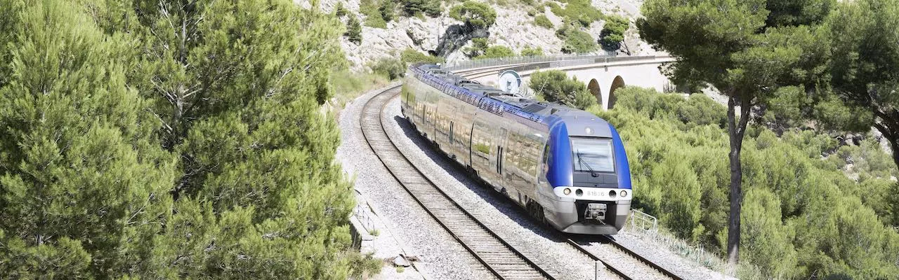

Aides au transport: train
En association avec les régions, la SNCF et l'Etat, Fleurance-Nature Transports vous propose des offres avantageuses et des tarifs adaptés afin de vous permettre de prendre le train pour vous rendre au travail.
Mon abonnement TER mensuel
Son coût est entièrement pris en charge par Fleurance Nature pour ses employés, ce titre vous permet de voyager à volonté sur un trajet, et également de bénéficier de tarifs réduits sur tous les autres trajets dans la région. Pour en bénéficier, vous devez souscrire à celui-ci auprès de la SNCF (en gare, au guichet ou sur une borne TER, ou en ligne) et fournir une preuve d'achat de celui-ci. Attention, celui-ci est valable uniquement dans la région d'achat, et uniquement sur les TER (pas de TGV).
Tickets de TER offerts à réserver
Fleurance-Nature met à disposition de ses employés des tickets gratuits de train express régional (TER) de la gare la plus proche de votre domicile, jusqu'à la gare la plus proche de votre lieu de travail. Attention, les tickets réservés sont valables uniquement le jour même.
Informations diverses et horaires des lignes
La SNCF met à disposition une plateforme nommée SNCF Connect, qui vous permet de rechercher, pour votre trajet, les lignes de train que vous pouvez emprunter, ainsi que leurs horaires de passage aux gares. Vous pouvez aussi y voir les infos trafic et les éventuelles perturbations.
Contactez-nous
Par téléphone
05 62 06 14 48
Du lundi au vendredi, de 8h à 18h
(Numéro non surtaxé)
Catalogue
Vous avez reçu un code par courrier ?
Suivez nous sur les réseaux sociaux